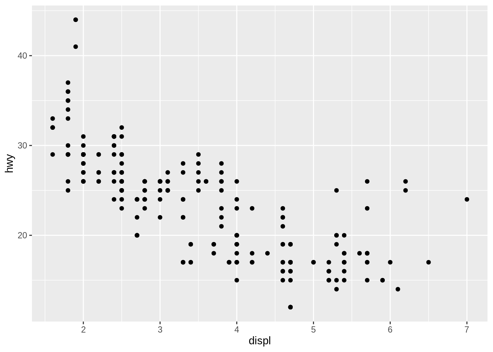
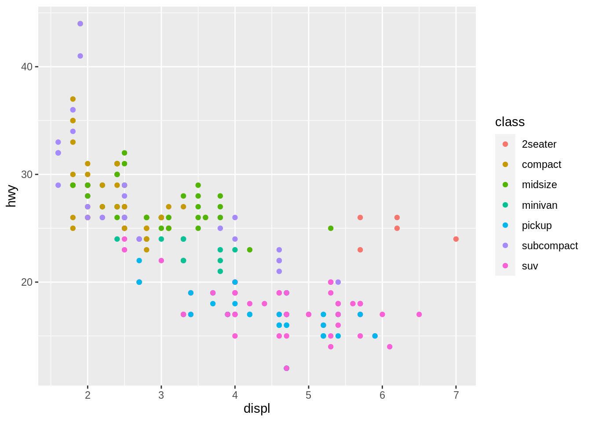
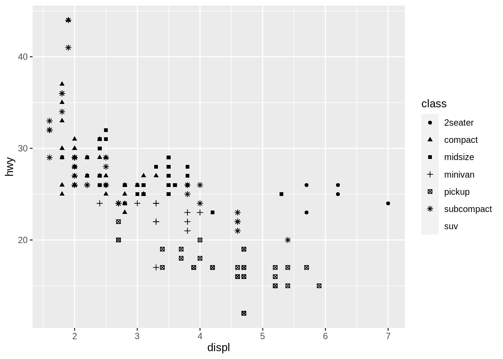
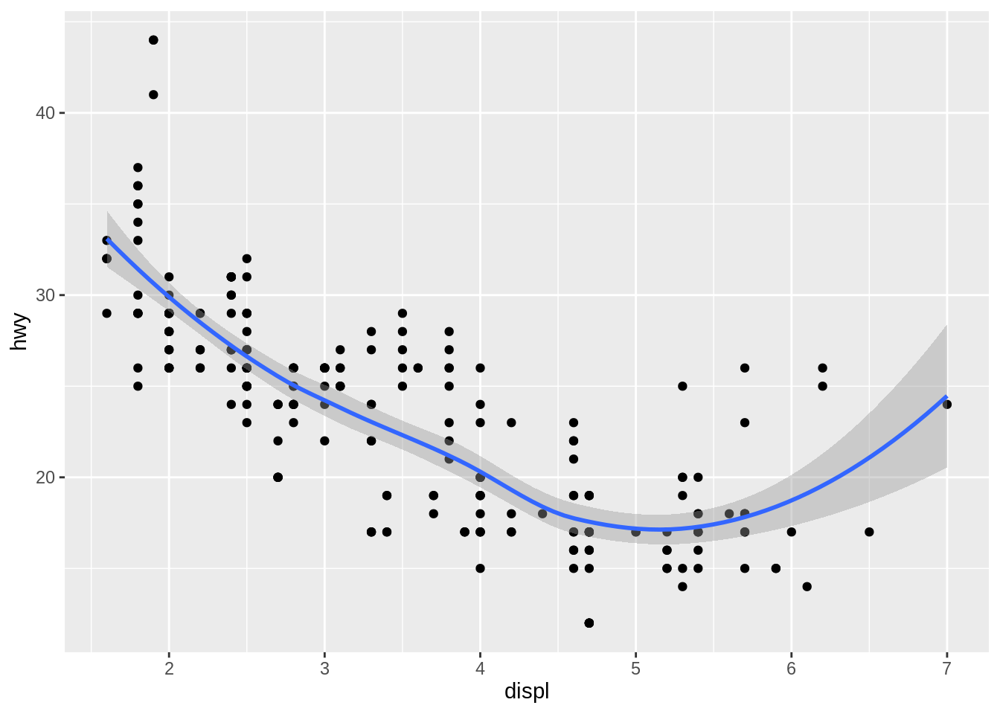
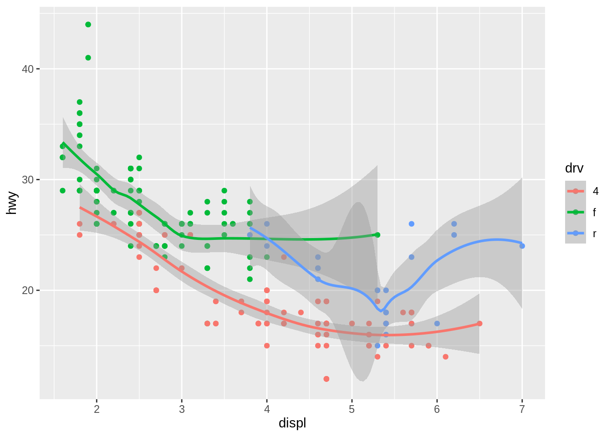
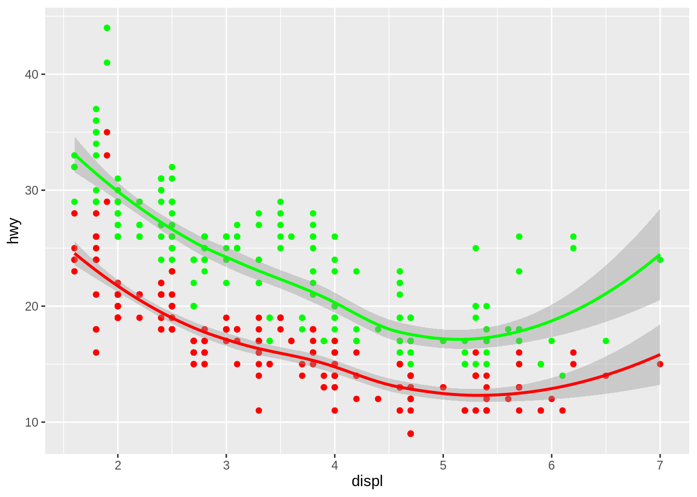

# Instalación conjunta con el resto de Tidyverse
install.packages("tidyverse")
# Instalación individual de ggplot2
install.packages("ggplot2")9 ggplot2 y plotly - creación declarativa de gráficos interactivos
9.1 Trabajo previo
9.1.1 Lecturas
Chang, W. (2018). R graphics cookbook: Practical recipes for visualizing data. O’Reilly. https://r-graphics.org/
Wickham, H., & Grolemund, G. (2017). R for Data Science: Import, Tidy, Transform, Visualize, and Model Data (capítulo 3). O’Reilly Media. https://r4ds.had.co.nz/
Wickham, H., Navarro, D., & Pedersen, T. L. (s.f.). ggplot2: Elegant graphics for data analysis. https://ggplot2-book.org/
9.2 Resumen
R proporciona una gran cantidad de funciones para la elaboración de gráficos estadísticos. En este capítulo, se describen algunos de los paquetes que contienen estas funciones y se ejemplifican varios tipos de gráficos. Específicamente, se estudia el paquete ggplot2, para la creación declarativa de gráficos y el paquete plotly, para graficación interactiva.
Adicionalmente, se introduce el paquete DT, para la creación de tablas interactivas.
9.3 Instalación y carga
El paquete ggplot2 puede instalarse junto con todos los demás paquete de Tidyverse o de manera individual:
Por su parte, plotly también puede instalarse con la función install.packages():
# Instalación de plotly
install.packages("plotly")DT también se instala con
install.packages():
# Instalación de DT
install.packages("DT")Una vez instalados, todos los paquetes pueden cargarse con la función library():
# Carga de ggplot2, conjuntamente con el resto de Tidyverse
library(tidyverse)
# Carga individual de ggplot2
library(ggplot2)
# Carga de plotly
library(plotly)
# Carga de DT
library(DT)9.4 Características generales
9.4.1 ggplot2
ggplot2 es un sistema para la creación declarativa de gráficos, creado por Hadley Wickham en 2005. Está basado en el libro The Grammar of Graphics, de Leland Wilkinson, un esquema general para visualización de datos que descompone un gráfico en sus principales componentes semáticos, tales como capas y geometrías.
9.4.1.1 Principales componentes de un gráfico
De acuerdo con The Grammar of Graphics, los tres principales componentes de un gráfico son:
- Datos (observaciones y variables).
- Conjunto de mapeos de las variables del conjunto de datos a propiedades visuales (aesthetics) del gráfico, tales como posición en el eje x, posición en el eje y, color, tamaño y forma, entre otras.
- Al menos una capa, la cual describe como graficar cada observación. Por lo general, las capas se crean con funciones de geometrías (ej. puntos, líneas, barras).
ggplot2 implementa este enfoque por medio de la función ggplot(), cuya sintaxis puede resumirse de la siguiente forma:
ggplot(data = <DATOS>) +
<FUNCION_GEOMETRIA>(mapping = aes(<MAPEOS>))ggplot() crea un sistema de coordenadas (un “canvas”) al cual se le agregan capas. Su primer argumento es <DATOS>, el cual es usualmente un dataframe o un tibble.
La función aes() realiza los mapeos (<MAPEOS>) de las variables del conjunto de datos a las propiedades visuales del gráfico. Las capas se crean con funciones de geometrías (<FUNCION_GEOMETRIA>) como geom_point(), geom_bar() o geom_histogram(), entre muchas otras. Note el uso del operador + para agregar las capas al gráfico.
Como ejemplo, se implementa un gráfico para el conjunto de datos mpg, el cual contiene observaciones para 38 modelos de automóviles, recopiladas por la Agencia de Protección Ambiental de los Estados Unidos.
Primero, se despliegan los datos en formato tabular.
Code
mpg %>%
datatable(options = list(
pageLength = 5,
language = list(url = '//cdn.datatables.net/plug-ins/1.10.11/i18n/Spanish.json')
))Seguidamente, se crea un gráfico de dispersión que muestra la variable displ (engine displacement o cilindrada, en litros) en el eje x, y la variable hwy (highway miles per gallon o millas por galón en autopista) en el eje y.
# Gráfico de dispersión de cilindrada vs millas por galón en carretera
ggplot(data = mpg) +
geom_point(mapping = aes(x = displ, y = hwy))
El bloque de código anterior puede reescribirse mediante un pipe, para pasar el conjunto de datos a ggplot(). También puede llamarse a aes() como un argumento de ggplot() y no de la función de geometría. Esto último acostumbra hacerse cuando los mapeos de las variables a las propiedades estéticas son los mismos en todas las capas del gráfico.
# Gráfico de dispersión de cilindrada vs millas por galón en carretera
mpg |>
ggplot(aes(x = displ, y = hwy)) +
geom_point()El gráfico muestra una relación negativa entre el tamaño del motor (displ) y la eficiencia en el uso del combustible (hwy). En otras palabras, los vehículos con motores grandes usan más combustible.
9.4.1.2 Variables adicionales
Se pueden incluir variables adicionales en el gráfico mediante su mapeo a otras propiedades visuales. En el siguiente bloque de código, la variable class (tipo de automóvil), se mapea a la propiedad color.
# Gráfico de dispersión de cilindrada vs millas por galón en carretera
# coloreado por tipo de automóvil
mpg |>
ggplot(aes(x = displ, y = hwy, color = class)) +
geom_point()
La misma variable puede mapearse a la propiedad visual shape (forma). Los SUV no se incluyen en el gráfico debido a que ggplot solo muestra, por defecto, seis formas diferentes.
# Gráfico de dispersión de cilindrada vs millas por galón en carretera
# con formas de puntos correspondientes al tipo de automóvil
mpg |>
ggplot(aes(x = displ, y = hwy, shape = class)) +
geom_point()Warning: The shape palette can deal with a maximum of 6 discrete values because
more than 6 becomes difficult to discriminate; you have 7. Consider
specifying shapes manually if you must have them.Warning: Removed 62 rows containing missing values (geom_point).
9.4.1.3 Capas adicionales
Un mismo gráfico puede contener múltiples capas, cada una con su propia función de geometría. El siguiente bloque de código agrega una capa con la función geom_smooth(), la cual muestra una curva de tendencia.
# Gráfico de dispersión de cilindrada vs millas por galón en carretera
# + curva de tendencia
mpg |>
ggplot(aes(x = displ, y = hwy)) +
geom_point() +
geom_smooth()`geom_smooth()` using method = 'loess' and formula 'y ~ x'
En el siguiente ejemplo, se mapea la variable drv (tipo de tracción) a la propiedad visual del color, tanto para la capa de puntos como para la de la curva de tendencia.
# Gráfico de dispersión de cilindrada vs millas por galón en carretera
# + curva de tendencia
mpg |>
ggplot(aes(x = displ, y = hwy, color = drv)) +
geom_point() +
geom_smooth()`geom_smooth()` using method = 'loess' and formula 'y ~ x'
El siguiente gráfico muestra varias capas, correspondientes a geometrías de puntos y curvas de tendencia. aes() se llama en las funciones de geometrías debido a que cada una realiza mapeos diferentes.
# Gráfico de dispersión de cilindrada vs millas por galón en carretera
# y cilindrada vs millas por galón en ciudad
# + curvas de tendencias
mpg |>
ggplot(aes(x = displ)) +
geom_point(aes(y = hwy), color = "green") +
geom_smooth(aes(y = hwy), color = "green") +
geom_point(aes(y = cty), color = "red") +
geom_smooth(aes(y = cty), color = "red") `geom_smooth()` using method = 'loess' and formula 'y ~ x'
`geom_smooth()` using method = 'loess' and formula 'y ~ x'